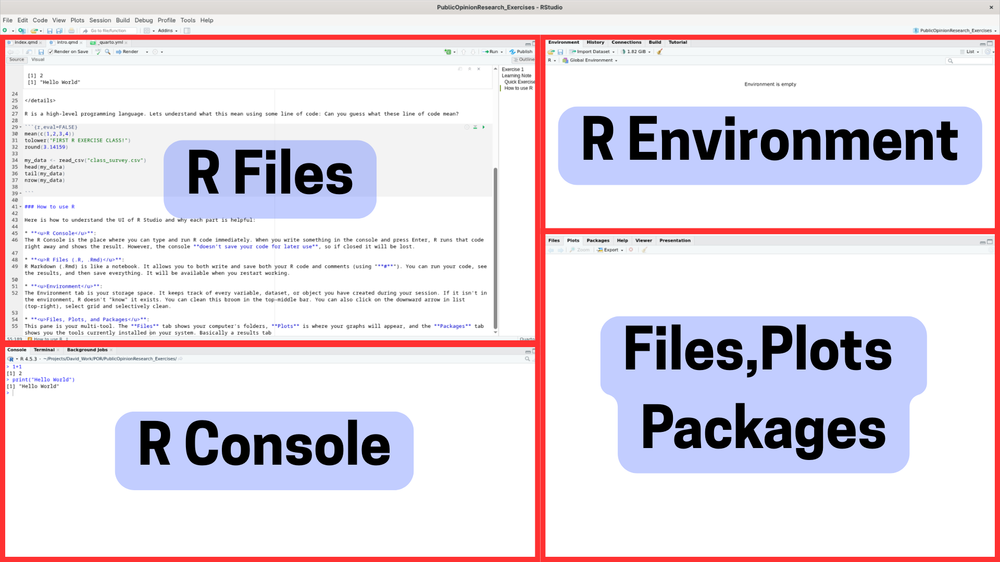
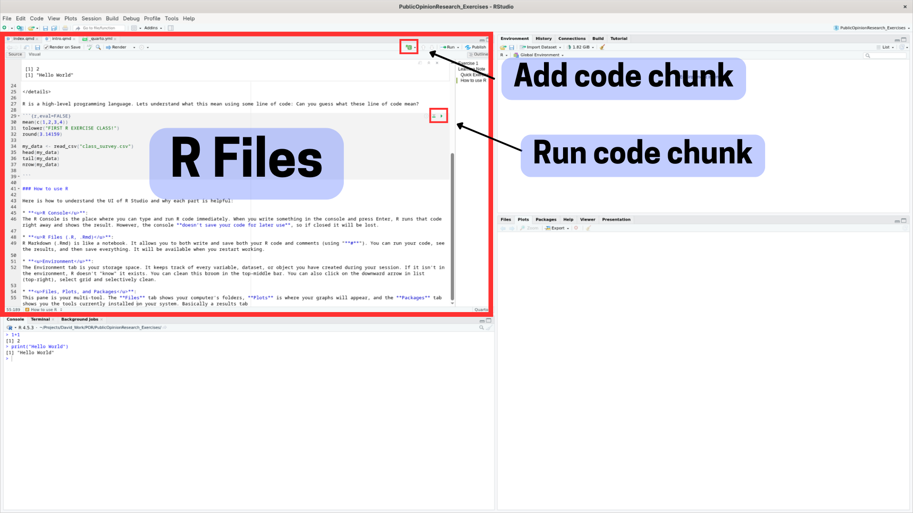
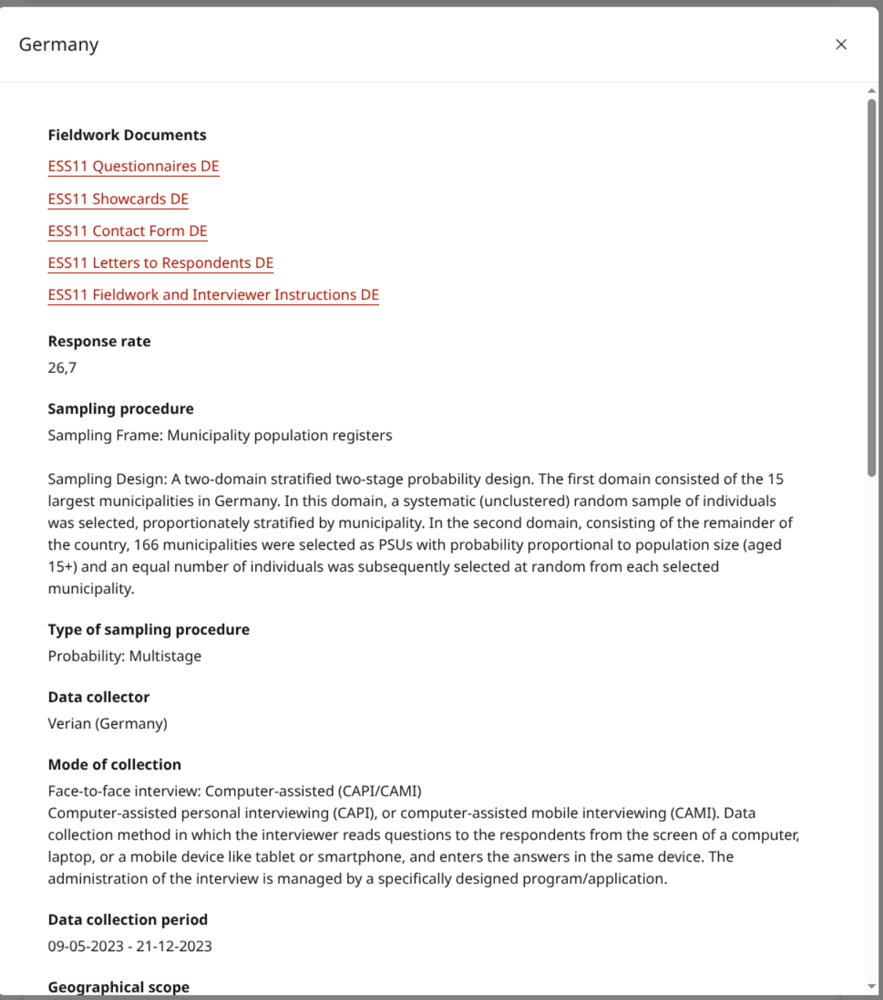
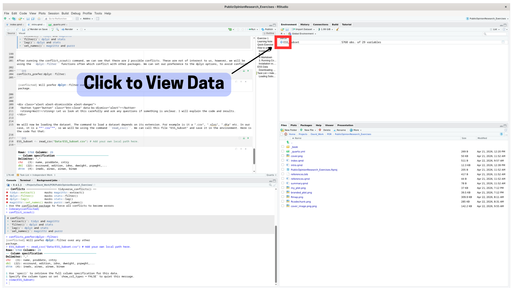
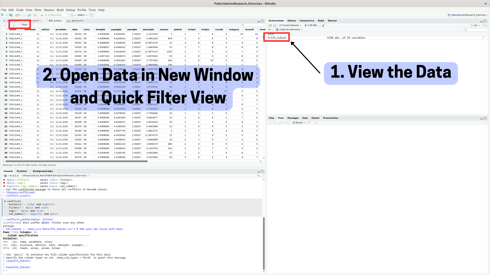
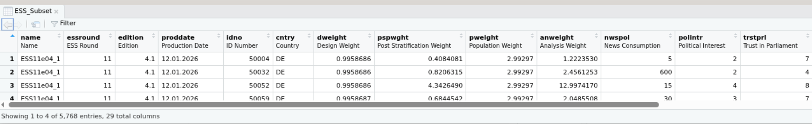
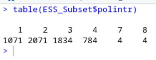
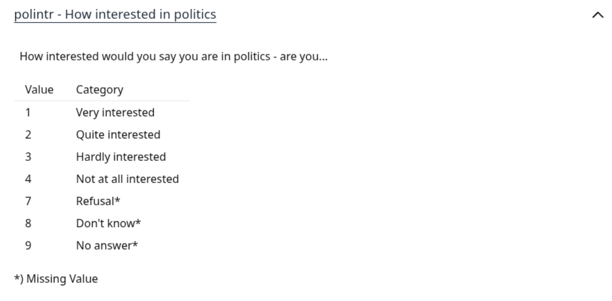
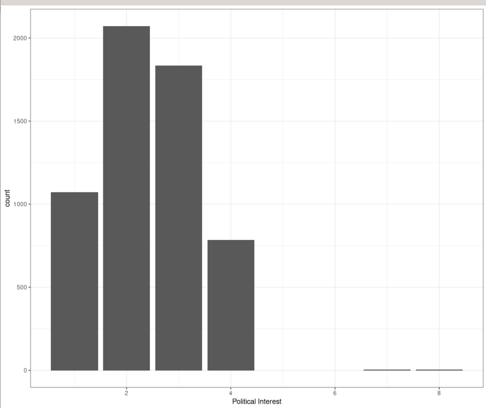
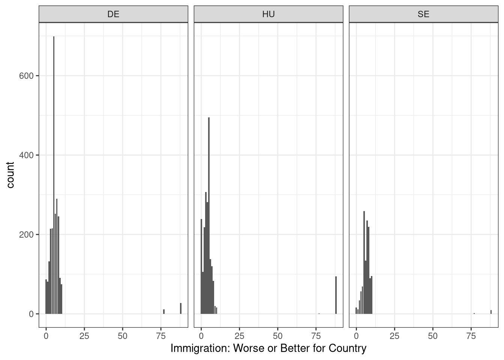

1+1[1] 2print("Hello World")[1] "Hello World"When I was learning programming, my teacher said:
“First, be a confident programmer, then an excellent one!”
The goal of these exercise sessions is exactly that: making sure you feel confident taking any dataset and knowing how to start. We aren’t aiming for perfection/full understanding today or next week; the goal is to learn slowly and become confident in R over the next three months!
Let’s start!
Open your console and write any two lines of code and run them!
R is a high-level programming language. Lets understand what this mean using some line of code: Can you guess what these line of code mean?
To start working in R, you need two things: “R” and the “interface” (RStudio).
Download and Install: Go to the official Posit website to find the installers for your operating system: Download R and RStudio Desktop
Click on “Download and Install R” first. This is the actual programming language. Once R is installed, click “Install RStudio.” and choose the correct version depending on your device.
Always open RStudio to start working
Try running a few commands like print("hello world") or 1+1
Here is how to understand the UI of R Studio and why each part is helpful:
R Console: The R Console is the place where you can type and run R code immediately. When you write something in the console and press Enter, R runs that code right away and shows the result. However, the console doesn’t save your code for later use, so if closed it will be lost.
R Files (.R, .Rmd): R Markdown (.Rmd) is like a notebook. It allows you to both write and save both your R code and comments (using “#”). You can run your code, see the results, and then save everything. It will be available when you restart working.
Environment: The Environment tab is your storage space. It keeps track of every variable, dataset, or object you have created during your session. If it isn’t in the environment, R doesn’t “know” it exists. You can clean this broom in the top-middle bar. You can also click on the downward arrow in list (top-right), select grid and selectively clean.
Files, Plots, and Packages: This pane is your multi-tool. The Files tab shows your computer’s folders, Plots is where your graphs will appear, and the Packages tab shows you the tools currently installed on your system. Basically a results tab

A code chunk is a special section (with a gray background) where you write and run R code.
Normal Space: Here is where you write plain text and also explain your work. You cannot execute code here
Inside the Chunk: Write your R code here. R can only execute what is inside these blocks.
Add a code chunk by clicking the +C button in the toolbar. Shortcut Ctrl + Alt + I (Windows) or Cmd + Option + I (Mac).
To see your results, you need to “run” the code using one of these methods:
Ctrl + Enter (Windows) or Cmd + Enter (Mac).
Installing a package (install.packages("package_name")): This is like downloading an app on your phone, you only need to do this once (unless you update the package or reinstall R). This downloads the package from a repository and saves it on your computer.
Loading a package (library(package_name)): This is like opening a app. Even though you’ve installed the package, you still need to load it into your current R session to be able to use its functions. This line of code needs to be run everytime you start a new session.
For the first exercise class, we will be looking at ESS data. Here is a link to the “European Social Survey” homepage. The European Social Survey (ESS) provides high-quality open access data measuring public attitudes, beliefs and behaviour.
You can read about the survey methodology, resources and news on ESS, on the link shared above. To check for different rounds of the ESS, data access, how data was collected for your country of interest, i.e., survey sampling strategy, refer to this link: ESS Data (This includes information for all ESS rounds).
For more information of ESS Round 11, 2023, refer to this link: ESS11. For information on country documentation, click on the “Country Documentation” drop-down.
For documentation on all the variables used in ESS Round 11, refer to this link Variable Documentation
For example, here is how the sampling procedure looked like in Germany:

You can download the entire ESS Round 11 Dataset on this page ESS Round 11 Download; However, it would be hard to comprehend and start working with it immediately.
For the purpose of this exercise, we will work only with a smaller subset of the ESS data. The goal is to be able to process and visualize this data and then work with larger subsets/multiple rounds later during this course! For this, will be using the “ESS Data Portal”, which allows us to build our own costum dataset! Link to Data Portal.
Please follow the following instructions to make the dataset replicable for this exercise (Alternatively, you can also download the data from Moodle or use this link with pre-selected values and understand the ESS download procedure later):
Now that we have the data, let us look at the remaining tasks for the Exercise Class!
In-Class Task
T1: Downloading and Loading ESS Subset on R.
T2: Introduction to Key Commands
T3: Plotting Variable Distributions
T4: Cross Country and Mode Comparision
Independent Work
IT1: How does T3 change based on other variables available
IT2: Survey Time and Sensitive Questions
IT3: Demographic, Country, Mode and Time Based Differences
Let us start with loading the required libraries, so the execution goes smoothly in the future. There are many, many, interesting libraries in R but, for now we will start will only two: library(readr) and library(tidyverse). As the course progresses, we will work with plenty of new libraries and also look at aesthetics of graphs and libraries to increase efficiency.
conflict_scout() from the library(conflicted) is also a helpful R package, which helps navigate possible conflicts in the future, as it is a very common R error. This error arises due to the same function being referenced from two different packages. For now, we don’t need to worry about this but, always good to have!
── Attaching core tidyverse packages ──────────────────────── tidyverse 2.0.0 ──
✔ dplyr 1.2.0 ✔ purrr 1.2.1
✔ forcats 1.0.1 ✔ stringr 1.6.0
✔ ggplot2 4.0.2 ✔ tibble 3.3.1
✔ lubridate 1.9.5 ✔ tidyr 1.3.2
── Conflicts ────────────────────────────────────────── tidyverse_conflicts() ──
✖ dplyr::filter() masks stats::filter()
✖ dplyr::lag() masks stats::lag()
ℹ Use the conflicted package (<http://conflicted.r-lib.org/>) to force all conflicts to become errors2 conflicts
• `filter()`: dplyr and stats
• `lag()`: dplyr and statsAfter running the conflict_scout() command, we can see that there are 2 possible conflicts. These are not of interest to us, however, we will be using the dplyr::filter functions often which conflict with other packages. We can set our preference to the dplyr options, to avoid conflict.
conflicts_prefer(dplyr::filter)[conflicted] Will prefer dplyr::filter over any other package.Wait! Let us look at this carefully and ask any questions if something is unclear. I will explain the code and results.
We will now be loading the dataset. The command to load a dataset depends on its extension. For example is it a “.csv”, “.xlxs”, “.dta” etc. In our case, it is a “.csv”, so we will be using the command read_csv(). We can call this file “ESS_Subset” and save it in the environment. Here is the code for that:
ESS_Subset <- read_csv("Data/ESS_Subset.csv") # Add your own local path here. Rows: 5768 Columns: 29
── Column specification ────────────────────────────────────────────────────────
Delimiter: ","
chr (3): name, proddate, cntry
dbl (22): essround, edition, idno, dweight, pspwght, pweight, anweight, nws...
dttm (4): inwds, ainws, ainwe, binwe
ℹ Use `spec()` to retrieve the full column specification for this data.
ℹ Specify the column types or set `show_col_types = FALSE` to quiet this message.Great! We have now loaded the dataset! Task 1 is complete!
To view the contents of the dataset, you can click on the “blue play button” (\(\blacktriangleright\)) in the environment for quick view, the text (ESS_Survey) for view in new tab or, use this command:
view(ESS_Subset)
Lets move on to the “Data Preparation” step. This is not a requirement; however, in many cases it helps understand the data better, i.e., the columns in the data, how they are stored, what they are called and, much more. In my experience, I always help me feel comfortable with the data and gain familiarity.
We will look how to understand “how our data looks like” using some quick important commands in the next section but, this will help us build familiarity with the data. I will start by renaming all columns. This can be done using the colnames() function. Everytime we work with lists of items, it is important to put them inside c(). This stands for vector in R. In many cases it helpful to rename the columns as well (for example, changing dweight to something like design_weight but since they are quite clean and ESS standard, this is to only help us look and understand the data). Here is how the code looks like:
colnames(ESS_Subset) <- c(
"name",
"essround",
"edition",
"proddate",
"idno",
"cntry",
"dweight",
"pspwght",
"pweight",
"anweight",
"nwspol",
"polintr",
"trstprl",
"trstplc",
"lrscale",
"imbgeco",
"imueclt",
"imwbcnt",
"gndr",
"agea",
"eduyrs",
"inwds",
"ainws",
"ainwe",
"binwe",
"inwtm",
"prob",
"stratum",
"psu"
)Tip!
Tip: You can click “Show in New Window” to open the data in another window and look at both, the variables and the .Rmd/.R file.

Question
What is c() and why do we use it?
c() is used to create a vector, a type of data structure in R. The c() stands for combine and it does exactly that. It is helpful when working with other commands and storing common value, for example, test scores in a class. The values inside c() can be manupilated together, for example, dividing everything by 2, finding the mean and much more!
While looking at the columns, which are stored based on the question number, it is also helpful to add the labels which correspond to the actual question/meta-data in the survey for clarity in the future. This also helps with gaining familiarity with the dataset. We will do this by first running install.packages("labelled") to install the labelled library and then loading the library using library(labelled). We will be using the function set_variable_labels()
library(labelled)
labels <- c(
name = "Name",
essround = "ESS Round",
edition = "Edition",
proddate = "Production Date",
idno = "ID Number",
cntry = "Country",
dweight = "Design Weight",
pspwght = "Post Stratification Weight",
pweight = "Population Weight",
anweight = "Analysis Weight",
nwspol = "News Consumption",
polintr = "Political Interest",
trstprl = "Trust in Parliament",
trstplc = "Trust in Police",
lrscale = "Left Right Scale",
imbgeco = "Immigration: Good or Bad for Economy",
imueclt = "Immigration: Cultural Life",
imwbcnt = "Immigration: Worse or Better for Country",
gndr = "Gender",
agea = "Age",
eduyrs = "Years of Education",
inwds = "Interview Start Time",
ainws = "Section A Start Time",
ainwe = "Section A End Time",
binwe = "Section B End Time",
inwtm = "Interview Length (Minutes)",
prob = "Sampling Probability",
stratum = "Stratum",
psu = "Primary Sampling Unit (PSU)"
)
ESS_Subset <- set_variable_labels(ESS_Subset, .labels = labels)The dataset would then look something like this, helping with future navigation:

Tip!
It is also worth noting that some columns have names (questions in the survey), which are quite long and hence, it is possible to add \n to the labels to ensure whenever they are printed they don’t go beyond the page/graph borders.
The rm() command stands for remove and it is used to remove objects (data, vectors, graphs, functions etc.) from the current environment to have a cleaner environment and remove objects which are not of use to us.
Here, we are not printing all the data summaries, but you can try them!
view(data) helps view full data in another tab
glimpse(data) provides the dimensions of the data, column names, what the values are coded as and the variable type (Giving a glimpse of the data). It is very Important to check which datatype is used and if it needs any conversion (But we will cover this in more detail in the coming weeks).
head(data) shows the top ‘X’ rows
tail(data) shows the bottom ‘Y’ rows
dim(data) shows the dimension of the data (row * column)
colnames(data) This is very useful as it gives a glance at the names of all the columns in or dataframe.
get_variable_labels(data) if labels are added to the data, this command is very helpful as it shows the column names alongside the labels for each column.
skim(data) very helpful as it provides everything provided by the glimpse() function alongside missing values, unique values as well as, whitespace if character type and histogram if numeric/factor.
Let us them all!
# view(data) We have already tried this
glimpse(ESS_Subset)Rows: 5,768
Columns: 29
$ name <chr> "ESS11e04_1", "ESS11e04_1", "ESS11e04_1", "ESS11e04_1", "ESS1…
$ essround <dbl> 11, 11, 11, 11, 11, 11, 11, 11, 11, 11, 11, 11, 11, 11, 11, 1…
$ edition <dbl> 4.1, 4.1, 4.1, 4.1, 4.1, 4.1, 4.1, 4.1, 4.1, 4.1, 4.1, 4.1, 4…
$ proddate <chr> "12.01.2026", "12.01.2026", "12.01.2026", "12.01.2026", "12.0…
$ idno <dbl> 50004, 50032, 50052, 50059, 50070, 50083, 50085, 50090, 50099…
$ cntry <chr> "DE", "DE", "DE", "DE", "DE", "DE", "DE", "DE", "DE", "DE", "…
$ dweight <dbl> 0.9958686, 0.9958686, 0.9958686, 0.9958687, 0.9958686, 1.0267…
$ pspwght <dbl> 0.4084081, 0.8206315, 4.3426490, 0.6844542, 4.3426490, 0.4536…
$ pweight <dbl> 2.99297, 2.99297, 2.99297, 2.99297, 2.99297, 2.99297, 2.99297…
$ anweight <dbl> 1.2223530, 2.4561253, 12.9974170, 2.0485508, 12.9974170, 1.35…
$ nwspol <dbl> 5, 600, 15, 30, 1029, 60, 903, 180, 90, 30, 60, 30, 60, 15, 4…
$ polintr <dbl> 2, 2, 4, 3, 1, 1, 1, 1, 1, 2, 2, 3, 2, 3, 1, 2, 1, 3, 2, 2, 1…
$ trstprl <dbl> 7, 4, 8, 7, 7, 8, 6, 1, 8, 10, 6, 0, 7, 7, 6, 8, 5, 4, 5, 6, …
$ trstplc <dbl> 8, 8, 8, 8, 9, 9, 10, 1, 8, 8, 8, 9, 8, 7, 8, 8, 8, 8, 5, 8, …
$ lrscale <dbl> 5, 3, 5, 5, 6, 3, 5, 7, 4, 4, 5, 8, 3, 77, 8, 6, 7, 3, 0, 5, …
$ imbgeco <dbl> 10, 7, 5, 8, 7, 8, 6, 2, 8, 6, 6, 5, 7, 5, 9, 7, 8, 5, 5, 7, …
$ imueclt <dbl> 10, 8, 5, 8, 5, 8, 5, 2, 5, 6, 5, 5, 5, 5, 5, 5, 7, 7, 5, 6, …
$ imwbcnt <dbl> 5, 7, 5, 8, 5, 8, 5, 1, 7, 5, 5, 2, 6, 5, 4, 5, 7, 5, 5, 3, 6…
$ gndr <dbl> 1, 2, 1, 2, 1, 1, 1, 1, 1, 1, 1, 1, 1, 2, 1, 1, 1, 2, 2, 2, 1…
$ agea <dbl> 34, 42, 41, 58, 40, 46, 56, 63, 24, 57, 66, 80, 64, 38, 48, 3…
$ eduyrs <dbl> 17, 17, 5, 13, 17, 17, 11, 15, 14, 20, 15, 9, 28, 17, 20, 18,…
$ inwds <dttm> 2023-09-07 09:03:48, 2023-09-08 10:00:45, 2023-11-27 17:09:4…
$ ainws <dttm> 2023-09-07 09:03:52, 2023-09-08 10:00:46, 2023-11-27 17:09:4…
$ ainwe <dttm> 2023-09-07 09:13:33, 2023-09-08 10:07:30, 2023-11-27 17:16:2…
$ binwe <dttm> 2023-09-07 09:21:37, 2023-09-08 10:23:17, 2023-11-27 17:46:5…
$ inwtm <dbl> 79, 65, 115, 70, 53, 51, 56, 116, 68, 88, 38, 56, 81, 52, 47,…
$ prob <dbl> 0.0001283532, 0.0001283532, 0.0001283532, 0.0001283532, 0.000…
$ stratum <dbl> 288, 292, 288, 270, 288, 279, 289, 293, 281, 289, 281, 289, 2…
$ psu <dbl> 5433, 5564, 5506, 5436, 5577, 5892, 5505, 5469, 5444, 5539, 5…head(ESS_Subset,3)# A tibble: 3 × 29
name essround edition proddate idno cntry dweight pspwght pweight anweight
<chr> <dbl> <dbl> <chr> <dbl> <chr> <dbl> <dbl> <dbl> <dbl>
1 ESS11e… 11 4.1 12.01.2… 50004 DE 0.996 0.408 2.99 1.22
2 ESS11e… 11 4.1 12.01.2… 50032 DE 0.996 0.821 2.99 2.46
3 ESS11e… 11 4.1 12.01.2… 50052 DE 0.996 4.34 2.99 13.0
# ℹ 19 more variables: nwspol <dbl>, polintr <dbl>, trstprl <dbl>,
# trstplc <dbl>, lrscale <dbl>, imbgeco <dbl>, imueclt <dbl>, imwbcnt <dbl>,
# gndr <dbl>, agea <dbl>, eduyrs <dbl>, inwds <dttm>, ainws <dttm>,
# ainwe <dttm>, binwe <dttm>, inwtm <dbl>, prob <dbl>, stratum <dbl>,
# psu <dbl>tail(ESS_Subset,3)# A tibble: 3 × 29
name essround edition proddate idno cntry dweight pspwght pweight anweight
<chr> <dbl> <dbl> <chr> <dbl> <chr> <dbl> <dbl> <dbl> <dbl>
1 ESS11e… 11 4.1 12.01.2… 86286 SE 1.000 1.03 0.707 0.728
2 ESS11e… 11 4.1 12.01.2… 86302 SE 1.000 0.806 0.707 0.569
3 ESS11e… 11 4.1 12.01.2… 86304 SE 1.00 0.534 0.707 0.377
# ℹ 19 more variables: nwspol <dbl>, polintr <dbl>, trstprl <dbl>,
# trstplc <dbl>, lrscale <dbl>, imbgeco <dbl>, imueclt <dbl>, imwbcnt <dbl>,
# gndr <dbl>, agea <dbl>, eduyrs <dbl>, inwds <dttm>, ainws <dttm>,
# ainwe <dttm>, binwe <dttm>, inwtm <dbl>, prob <dbl>, stratum <dbl>,
# psu <dbl>dim(ESS_Subset)[1] 5768 29# colnames(ESS_Subset) We have already tried this too
# get_variable_labels(ESS_Subset) Will show us the labels we created in the previous sectionIf you would like to try more fancy summary libraries, you can test library(skimr):
| Name | ESS_Subset |
| Number of rows | 5768 |
| Number of columns | 29 |
| _______________________ | |
| Column type frequency: | |
| character | 3 |
| numeric | 22 |
| POSIXct | 4 |
| ________________________ | |
| Group variables | None |
Variable type: character
| skim_variable | n_missing | complete_rate | min | max | empty | n_unique | whitespace |
|---|---|---|---|---|---|---|---|
| name | 0 | 1 | 10 | 10 | 0 | 1 | 0 |
| proddate | 0 | 1 | 10 | 10 | 0 | 1 | 0 |
| cntry | 0 | 1 | 2 | 2 | 0 | 3 | 0 |
Variable type: numeric
| skim_variable | n_missing | complete_rate | mean | sd | p0 | p25 | p50 | p75 | p100 | hist |
|---|---|---|---|---|---|---|---|---|---|---|
| essround | 0 | 1.00 | 11.00 | 0.00 | 11.00 | 11.00 | 11.00 | 11.00 | 11.00 | ▁▁▇▁▁ |
| edition | 0 | 1.00 | 4.10 | 0.00 | 4.10 | 4.10 | 4.10 | 4.10 | 4.10 | ▁▁▇▁▁ |
| idno | 0 | 1.00 | 68096.27 | 10955.38 | 50004.00 | 58755.50 | 68012.50 | 77302.25 | 273840.00 | ▇▁▁▁▁ |
| dweight | 0 | 1.00 | 1.00 | 0.15 | 0.78 | 1.00 | 1.00 | 1.00 | 1.77 | ▃▇▂▁▁ |
| pspwght | 0 | 1.00 | 1.00 | 0.88 | 0.12 | 0.51 | 0.78 | 1.10 | 4.34 | ▇▃▁▁▁ |
| pweight | 0 | 1.00 | 1.55 | 1.23 | 0.39 | 0.39 | 0.71 | 2.99 | 2.99 | ▇▁▁▁▆ |
| anweight | 0 | 1.00 | 1.55 | 2.58 | 0.11 | 0.38 | 0.61 | 1.34 | 13.00 | ▇▁▁▁▁ |
| nwspol | 0 | 1.00 | 248.62 | 879.38 | 0.00 | 30.00 | 60.00 | 120.00 | 8888.00 | ▇▁▁▁▁ |
| polintr | 0 | 1.00 | 2.41 | 0.96 | 1.00 | 2.00 | 2.00 | 3.00 | 8.00 | ▇▅▂▁▁ |
| trstprl | 0 | 1.00 | 5.97 | 8.52 | 0.00 | 3.00 | 5.00 | 7.00 | 88.00 | ▇▁▁▁▁ |
| trstplc | 0 | 1.00 | 7.33 | 6.70 | 0.00 | 5.00 | 7.00 | 8.00 | 88.00 | ▇▁▁▁▁ |
| lrscale | 0 | 1.00 | 10.37 | 19.86 | 0.00 | 4.00 | 5.00 | 7.00 | 88.00 | ▇▁▁▁▁ |
| imbgeco | 0 | 1.00 | 7.11 | 12.87 | 0.00 | 3.00 | 5.00 | 7.00 | 88.00 | ▇▁▁▁▁ |
| imueclt | 0 | 1.00 | 6.93 | 11.43 | 0.00 | 4.00 | 5.00 | 8.00 | 88.00 | ▇▁▁▁▁ |
| imwbcnt | 0 | 1.00 | 7.01 | 13.03 | 0.00 | 3.00 | 5.00 | 7.00 | 88.00 | ▇▁▁▁▁ |
| gndr | 0 | 1.00 | 1.53 | 0.50 | 1.00 | 1.00 | 2.00 | 2.00 | 2.00 | ▇▁▁▁▇ |
| agea | 0 | 1.00 | 57.98 | 81.82 | 15.00 | 36.00 | 53.00 | 67.00 | 999.00 | ▇▁▁▁▁ |
| eduyrs | 0 | 1.00 | 14.05 | 7.12 | 0.00 | 11.00 | 13.00 | 16.00 | 99.00 | ▇▁▁▁▁ |
| inwtm | 50 | 0.99 | 64.19 | 30.16 | 4.00 | 50.00 | 61.00 | 73.00 | 788.00 | ▇▁▁▁▁ |
| prob | 0 | 1.00 | 0.00 | 0.00 | 0.00 | 0.00 | 0.00 | 0.00 | 0.00 | ▇▁▃▁▇ |
| stratum | 0 | 1.00 | 722.97 | 427.68 | 270.00 | 289.00 | 804.00 | 870.00 | 1405.00 | ▇▁▇▁▅ |
| psu | 0 | 1.00 | 12266.02 | 6901.13 | 5432.00 | 5544.00 | 12943.50 | 13555.00 | 24391.00 | ▇▂▅▁▅ |
Variable type: POSIXct
| skim_variable | n_missing | complete_rate | min | max | median | n_unique |
|---|---|---|---|---|---|---|
| inwds | 0 | 1 | 2023-03-13 12:01:17 | 2023-12-17 16:37:22 | 2023-07-01 12:55:53 | 5766 |
| ainws | 1 | 1 | 2023-03-13 12:01:20 | 2023-12-17 16:37:24 | 2023-07-01 13:03:18 | 5763 |
| ainwe | 1 | 1 | 2023-03-13 12:04:11 | 2023-12-17 16:40:54 | 2023-07-01 13:03:35 | 5759 |
| binwe | 1 | 1 | 2023-03-13 12:18:51 | 2023-12-17 16:57:37 | 2023-07-01 13:14:22 | 5759 |
Next lets look at the $ sign. In R, we use, for example, ESS_Subset$variable_name to access the column “variable_name”. Try running: ESS_Subset$nwspol, we get a list of all the survey values in the column “nwspol” (How much ever R is defaulted to print). This is a very helpful and one of the most frequently used operators in R. This is because most basic R functions don’t look at the whole dataset at once, rather they want a specific list of values. The $ tells R exactly which column to “access” to perform a calculation.
Here are some examples where it can be used (lets use the “polintr” variable in all cases):
Beyond table() and mean(), here are other essential ways you will use the $ operator:
unique(ESS_Subset$polintr): Shows you a list of all the different answers in that column without repeats.summary(ESS_Subset$polintr): If the column is numbers, it gives you the average and range; if it’s a category, it gives you counts.mean(ESS_Subset$polintr): To look at the mean of our columnmean(ESS_Subset$polintr)[1] 2.411755median(ESS_Subset$polintr)[1] 2head(ESS_Subset$polintr)[1] 2 2 4 3 1 1tail(ESS_Subset$polintr)[1] 2 2 1 2 2 1Perfect! Let us look at the final important function and take a 5 minute break! After the break, we will look at how to plot the distributions of these variables!
This is the table() function! This is another very important function. It essentially asks R: “Can you count how many times each unique value appears?”. The output is very easy to read as well. Let us try this:
table(ESS_Subset$polintr)
1 2 3 4 7 8
1071 2071 1834 784 4 4 We can see that respondents selected “1” 1071 times, “2” 2071 times and so on…
In this, we can also provide two variables! Lets try interest in politics and the country of the respondent.
table(ESS_Subset$polintr, ESS_Subset$cntry)
DE HU SE
1 628 142 301
2 917 560 594
3 733 825 276
4 141 586 57
7 1 2 1
8 0 3 1Wait, but this not very useful. I am not able to understand what is happening quickly. We can also try to use prop.table() in such cases, which converts counts into proportions. prop.table() does not know how to look at raw columns; it only knows how to look at an existing table, so we must give it a table. We must also specify if we would like proportions by rows or by columns. Here is how to do that:
By Row: prop.table(table(ESS_Subset$polintr, ESS_Subset$cntry), 1)
By Column: prop.table(table(ESS_Subset$polintr, ESS_Subset$cntry), 2)
prop.table(table(ESS_Subset$polintr, ESS_Subset$cntry), 2)
DE HU SE
1 0.2595041322 0.0670443815 0.2447154472
2 0.3789256198 0.2644003777 0.4829268293
3 0.3028925620 0.3895184136 0.2243902439
4 0.0582644628 0.2766761095 0.0463414634
7 0.0004132231 0.0009442871 0.0008130081
8 0.0000000000 0.0014164306 0.0008130081Question
Looking at this variable, we immediately notice a problem! Can you guess what it is? We will be solving that in the next section.
Wait! We have covered a lot now! Let us look at this carefully and ask any questions if something is unclear. Would you like me explain anything again?
To begin with, we will only look at univariate distributions, i.e., how is a single variable (column) distributed? Is there something which raises suspicion or does it all feel normal?
To make univariate distributions for all the columns in the data, we must first identify if the variable is either continuous, categorical or character. This is because:
Most of the variables in the subset, which we will are looking at for this exercise, are categorical. We will learn more about data types and logical operators in R during the coming weeks.
For now, let us start with working with some real world data! I will be showing an example using the political interest “polintr” variable.
This is very important. The table() function we discussed in the previous section would be perfect for this, as it shows how many times each unique value appears. While looking at bargraphs, it is important to understand what each number stands for. Running table() we get this result:


Okay, now that we know what the scale means, we must decide what to do. Do we remove these? Or merge some values? Or something else? What do you guys think?
IMP: This is not a session on data visualisation. This will be covered soon! There we will learn how to make nice visualisations, convert graphs from our imagination into reality and focus on small important details.
Since the objective is to look at how people respond and understand which variable is sensitive and which is not, we will not remove any data as missing values, refusal to answer etc., tell us quite a bit too!
Let us now plot a simple bar graph in R! Our first plot :) Use this code: ggplot(ESS_Subset, aes(x=polintr)) + geom_bar() + theme_bw()
The first part specifies what we have and the second part, what we want to do with it. We can add titles, labels, colors and so much more but, that is for another class! You should see something like this:

In this exercise, we will compare the distributions of “safe” variables with potentially sensitive ones. Take 10-15 minutes and attempt the following exercise:
Make a histogram of eduyrs (education years)
Make a histogram of lrscale (left-right)
Make a histogram of imwbcnt (“immigrants make country worse [0] or better [10]”)
Are there any spikes at socially desirable values?
(1) Is there a social referent?Finally, using the four-conditions framework, let us discuss which variables are likely affected by social desirability? What does a suspicious distribution look like? (heaping at midpoint, avoidance of extreme positions, missing data patterns)
Great job! You have made it to the final section! Here, we will try to see if there are any differences based on the country and what they might mean. To look at different countries together, we are going to use the popular visualization method in R: Faceting. To create facets, we use the command facet_wrap(~variable). Here the ~ tell us what variable we would like to facet. We will look more into faceting during the visualization session! For now, facets help us plot the data into different panels by splitting it based on the the variable of interest. In our case, we need to run the following command:
ggplot(ESS_Subset, aes(x=imwbcnt)) +
geom_bar() +
facet_wrap(~cntry) +
theme_bw() 
Now, it is your turn to try this!
Great! Now T1, T2, T3, T4 are done! At home, you also also work on these independent tasks:
In-Class Task
T1: Downloading and Loading ESS Subset on R. ✅
T2: Introduction to Key Commands ✅
T3: Plotting Variable Distributions ✅
T4: Cross Country and Mode Comparision ✅
Independent Work
IT1: How does T3 change based on other variables available
IT2: Survey Time and Sensitive Questions
IT3: Demographic, Country, Mode and Time Based Differences